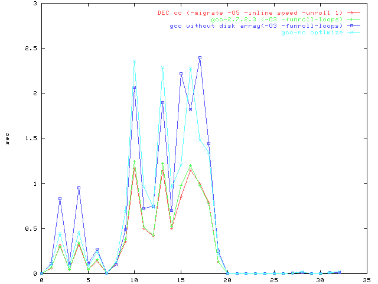

PostgreSQL の Wisconsin Benchmark
ベンチマーク結果(DEC Alpha 特別編)

- DEC cc (-migrate -O5 -inline speed -unroll 1)[2454]
- gcc-2.7.2.3 (-O3 -funroll-loops)[2454]
- gcc without disk array(-O3 -funroll-loops)[2454]
- gcc-no optimize[2454]
 [return to the benchmark top page]
[return to the benchmark top page]